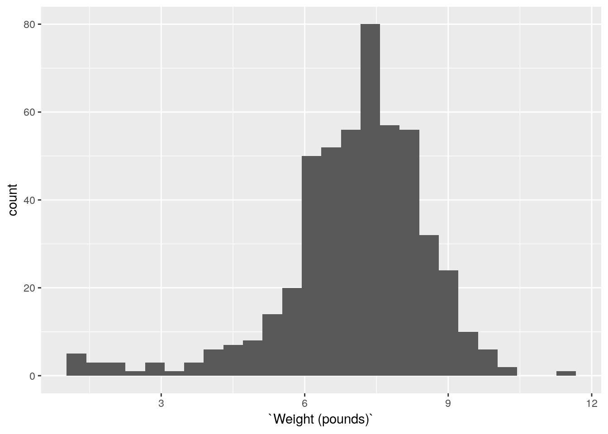
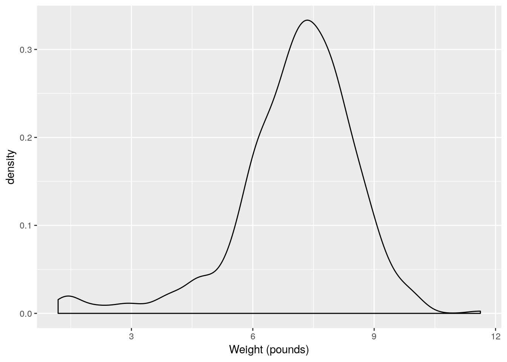
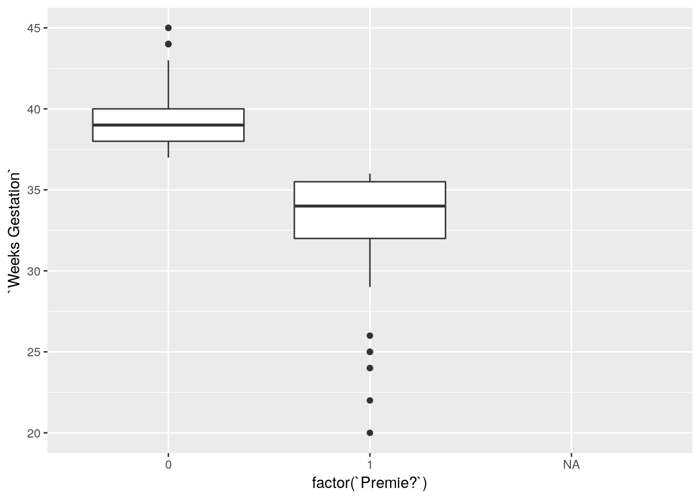
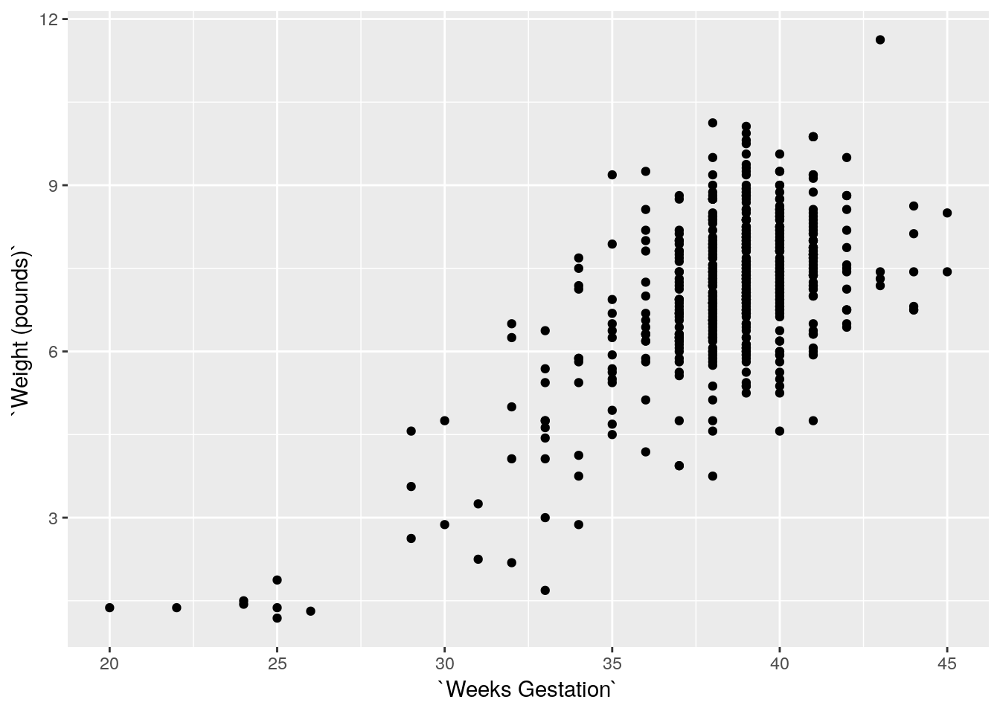
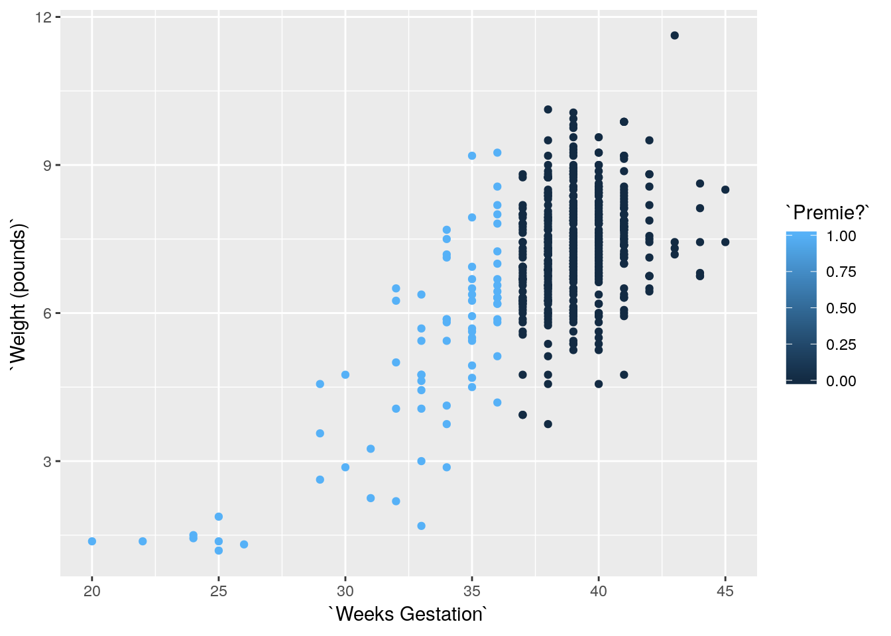

Chapter 4 Data exploration
## ── Attaching packages ─────────────────────────────────────────────────────────────────────────────────────── tidyverse 1.2.1 ──## ✔ ggplot2 3.0.0 ✔ purrr 0.2.5
## ✔ tibble 1.4.2 ✔ dplyr 0.7.6
## ✔ tidyr 0.8.1 ✔ stringr 1.3.1
## ✔ readr 1.1.1 ✔ forcats 0.3.0## ── Conflicts ────────────────────────────────────────────────────────────────────────────────────────── tidyverse_conflicts() ──
## ✖ dplyr::filter() masks stats::filter()
## ✖ dplyr::lag() masks stats::lag()4.1 North Carolina births
The data in file http://www.utsc.utoronto.ca/~butler/c32/ncbirths.csv are about 500 randomly chosen births of babies in North Carolina. There is a lot of information: not just the weight at birth of the baby, but whether the baby was born prematurely, the ages of the parents, whether the parents are married, how long (in weeks) the pregnancy lasted (this is called the “gestation”) and so on.
- Read in the data from the file into R, bearing in mind what type of file it is.
Solution
This is a .csv file (it came from a spreadsheet), so it
needs reading in accordingly. Work directly from the URL (rather
than downloading the file, unless you are working offline):
## Parsed with column specification:
## cols(
## `Father Age` = col_integer(),
## `Mother Age` = col_integer(),
## `Weeks Gestation` = col_integer(),
## `Pre-natal Visits` = col_integer(),
## `Marital Status` = col_integer(),
## `Mother Weight Gained` = col_integer(),
## `Low Birthweight?` = col_integer(),
## `Weight (pounds)` = col_double(),
## `Premie?` = col_integer(),
## `Few Visits?` = col_integer()
## )This shows you which variables the data set has (some of the names got a bit mangled), and it shows you that they are all integers except for the birth weight (a decimal number).
The easiest way to find out how many rows and columns there are is simply to list the data frame:
## # A tibble: 500 x 10
## `Father Age` `Mother Age` `Weeks Gestatio… `Pre-natal Visi…
## <int> <int> <int> <int>
## 1 27 26 38 14
## 2 35 33 40 11
## 3 34 22 37 10
## 4 NA 16 38 9
## 5 35 33 39 12
## 6 32 24 36 12
## 7 33 33 38 15
## 8 38 35 38 16
## 9 28 29 40 5
## 10 NA 19 34 10
## # ... with 490 more rows, and 6 more variables: `Marital Status` <int>,
## # `Mother Weight Gained` <int>, `Low Birthweight?` <int>, `Weight
## # (pounds)` <dbl>, `Premie?` <int>, `Few Visits?` <int>or you can take a “glimpse” of it:
## Observations: 500
## Variables: 10
## $ `Father Age` <int> 27, 35, 34, NA, 35, 32, 33, 38, 28, NA,...
## $ `Mother Age` <int> 26, 33, 22, 16, 33, 24, 33, 35, 29, 19,...
## $ `Weeks Gestation` <int> 38, 40, 37, 38, 39, 36, 38, 38, 40, 34,...
## $ `Pre-natal Visits` <int> 14, 11, 10, 9, 12, 12, 15, 16, 5, 10, 1...
## $ `Marital Status` <int> 1, 1, 2, 2, 1, 1, 2, 1, 1, 2, 1, 1, 2, ...
## $ `Mother Weight Gained` <int> 32, 23, 50, NA, 15, 12, 60, 2, 20, NA, ...
## $ `Low Birthweight?` <int> 0, 0, 0, 0, 0, 0, 0, 0, 0, 1, 0, 0, 0, ...
## $ `Weight (pounds)` <dbl> 6.8750, 6.8125, 7.2500, 8.8125, 8.8125,...
## $ `Premie?` <int> 0, 0, 0, 0, 0, 1, 0, 0, 0, 1, 0, 0, 1, ...
## $ `Few Visits?` <int> 0, 0, 0, 0, 0, 0, 0, 0, 1, 0, 0, 0, 1, ...Either of these displays show that there are 500 rows (observations, here births) and 10 columns (variables), and they both show what the variables are called. So they’re both good as an answer to the question.
What you’ll notice is that the variables have spaces in their
names, which will require special handling later. These outputs show
you what to do about those spaces in variable names: surround the
variable name with “backticks”. (On my keyboard, that’s on the key
to the left of number 1, where the squiggle is, that looks like a
backwards apostrophe. Probably next to Esc, depending on the
layout of your keyboard.)
Although almost all of the variables are stored as integers, the ones that have a question mark in their name are actually “logical”, true or false, with 1 denoting true and 0 false. We could convert them later if we want to. (A question mark is not a traditional character to put in a variable name, so we have to surround these variables with backticks too.)
- From your output, verify that you have the right number of observations and that you have several variables. Which of your variables correspond to birthweight, prematureness and length of pregnancy? (You might have to make guesses based on the names of the variables.)
Solution
I do indeed have 500 observations on 10 variables (“several”). (If
you don’t have several variables, check to see that you didn’t use
read_delim or something by mistake.) After the
“500 observations of 10 variables” line(s) in each case, you see all the
variables by name, with what type of values they have, and the first few of the
values.
The variable Weight (pounds) is the birthweight (in pounds),
Premie? is 1 for a premature baby and 0 for a full-term baby,
and Weeks Gestation is the number of weeks the pregnancy
lasted. Don’t forget to put backticks around each of those when
you use them
later.
- The theory behind the \(t\)-test (which we do later) says that the distribution of birth weights should be (approximately) normally distributed. Obtain a histogram of the birth weights. Does it look approximately normal? Comment briefly. (You’ll have to pick a number of bins for your histogram first. I don’t mind very much what you pick, as long as it’s not obviously too many or too few bins.)
Solution
You’ll have seen that I often start with 10 bins, or maybe not quite that many if I don’t have much data, and this is a decent general principle. That would give

which is perfectly acceptable. You can try something a bit more or a bit less, and see how you like it in comparison. What you are looking for is a nice clear picture of shape. If you have too few bins, you’ll lose the shape:

(is that leftmost bin an indication of skewness or some observations that happen to be smallish?)
And if you have too many, the shape will be there, but it will be hard to make out in all the noise, with frequencies going up and down:

I generally am fairly relaxed about the number of bins you use, as long as it’s not clearly too few or too many. You might have done exercises in the past that illustrate that the choice of number of bins (or the class intervals where you move from one bin to the next, which is another issue that I won’t explore here) can make an appreciable difference to how a histogram looks. Extra: I had some thoughts about this issue that I put in a blog post, that you might like to read: http://ritsokiguess.site/docs/2017/06/08/histograms-and-bins/. The nice thing about Sturges’ rule, mentioned there, is that you can almost get a number of bins for your histogram in your head (as long as you know the powers of 2, that is). What you do is to start with your sample size, here \(n=500\). You find the next power of 2 above that, which is here \(512=2^9\). You then take that power and add 1, to get 10 bins. If you don’t like that, you can get R to calculate it for you:
## [1] 10The place where Sturges’ rule comes from is an assumption of normal data (actually a binomial approximation to the normal, backwards though that sounds). If you have less than 30 observations, you’ll get fewer than 6 bins, which won’t do much of a job of showing the shape. Rob Hyndman wrote a about Sturges’ rule in which he asserts that it is just plain wrong (if you have taken B57, this note is very readable).
So what to use instead? Well, judgment is still better than something automatic, but if you want a place to start from, something with a better foundation than Sturges is the Freedman-Diaconis rule. This, in its original formulation, gives a bin width rather than a number of bins:
\[ w=2(IQR)n^{-1/3} \]
The nice thing about this is that it uses the interquartile range, so
it won’t be distorted by outliers. geom_histogram can take a
bin width, so we can use it as follows:
## [1] 0.4094743
R also has
## [1] 26which turns the Freedman-Diaconis rule into a number of bins rather
than a binwidth; using that gives the same histogram as we got with binwidth.
In my opinion, Freedman-Diaconis tends to give too many bins (here there are 26 rather than the 10 of Sturges). But I put it out there for you to make your own call.
Another way to go is a “density plot”. This is a smoothed-out version of a histogram that is not obviously frequencies in bins, but which does have a theoretical basis. It goes something like this:

geom_density has an optional parameter that controls how smooth
or wiggly the picture is, but the default is usually good.
Alright, before we got distracted, we were assessing normality. What about that?
It is mostly normal-looking, but I am suspicious about those very low birth weights, the ones below about 4 pounds. There are a few too many of those, as I see it.
If you think this is approximately normal, you need to make some comment along the lines of ``the shape is approximately symmetric with no outliers’’. I think my first answer is better, but this answer is worth something, since it is a not completely unreasonable interpretation of the histogram.
I have been making the distinction between a histogram (for one
quantitative variable) and side-by-side boxplots (for one quantitative
variable divided into groups by one categorical variable). When you
learned the boxplot, you probably learned it in the context of one
quantitative variable. You can draw a boxplot for that, too, but the
ggplot boxplot has an x as well as a
y. What you do to make a single boxplot is to set the
x equal 1, which produces a weird \(x\)-axis (that you ignore):

The high weight is actually an outlier, but look at all those outliers at the bottom!
I think the reason for those extra very low values is that they are the premature births (that can result in very small babies). Which leads to the additional question coming up.
4.2 More about the NC births
This is an exploration of some extra issues around the North Carolina births data set.
- How short does a pregnancy have to be, for the birth to be classified as “premature”? Deduce this from the data, by drawing a suitable graph or otherwise.
Solution
To figure it out from the data, we can
see how Weeks Gestation depends
on Premie?. Some possibilities are boxplots or a
scatterplot. Either of the first two graphs would get full credit (for
the graphing part: you still have to do the explanation) if this
were being marked:
## Warning: Removed 1 rows containing non-finite values (stat_boxplot).
The warning is because the prematurity of one of the babies is not known. Or
## Warning: Removed 1 rows containing missing values (geom_point).
The same warning again, for the same reason.
Notice how the graphs are similar in syntax, because the
what-to-plot is the same (apart from the factor thing) and we
just make a small change in
how-to-plot-it. In the boxplot, the thing on the \(x\)-scale needs to be
categorical, and Premie? is actually a number, so we’d better
make it into a factor, which is R’s version of a categorical
variable.
Premie. is actually a categorical variable (“premature” or
“not premature”)
masquerading as a quantitative one (1 or 0). It is an “indicator variable”, if
you’re familiar with that term.
It looks as if the breakpoint is 37 weeks: a pregnancy at least that
long is considered normal, but a shorter one ends with a premature
birth. Both plots show the same thing: the `Premie?=1` births
all go with short pregnancies, shorter than 37 weeks. This is
completely clear cut.
Another way to attack this is to use summarize, finding the
max and min:
## # A tibble: 1 x 3
## n min max
## <int> <dbl> <dbl>
## 1 500 NA NAonly this is for all the babies, premature or not. So we want it by prematurity,
which means a group_by first:
bw %>% group_by(`Premie?`) %>%
summarize( n=n(),
min=min(`Weeks Gestation`),
max=max(`Weeks Gestation`))## # A tibble: 3 x 4
## `Premie?` n min max
## <int> <int> <dbl> <dbl>
## 1 0 424 37 45
## 2 1 75 20 36
## 3 NA 1 NA NAgroup_by with a number works, even though using the number
in Premie? in a boxplot didn’t. group_by just uses
the distinct values, whether they are numbers, text or factor levels.
Any of these graphs or summaries will help you answer the question, in the same way. The ultimate issue here is ``something that will get the job done’’: it doesn’t matter so much what.
In R, NA means “missing”. When you try to compute something
containing a missing value, the answer is usually missing (since you
don’t know what the missing value is). That’s why the first
summarize gave us missing values: there was one missing weeks
of gestation in with all the ones for which we had values, so the max
and min had to be missing as well. In the second summarize,
the one by whether a baby was born prematurely or not, we learn a bit
more about that missing Premie?: evidently its weeks of
gestation was missing as well, since the min and max of that were
missing.
Here’s that baby. I’m doing a bit of fiddling to show all the columns (as rows, since there’s only one actual row). Don’t worry about the second line of code below; we will investigate that later.
## # A tibble: 10 x 2
## name value
## <chr> <dbl>
## 1 Father Age 33
## 2 Mother Age 32
## 3 Weeks Gestation NA
## 4 Pre-natal Visits 9
## 5 Marital Status 1
## 6 Mother Weight Gained 25
## 7 Low Birthweight? 0
## 8 Weight (pounds) 7.19
## 9 Premie? NA
## 10 Few Visits? 0The only thing that was missing was its weeks of gestation, but that prevented anyone from figuring out whether it was premature or not.
- Explore the relationship between birth weight and length of pregancy (“gestation”) using a suitable graph. What do you see?
Solution
This needs to be a scatterplot because these are both quantitative variables:
## Warning: Removed 1 rows containing missing values (geom_point).
You see a rather clear upward trend. Those very underweight babies came from very short pregnancies, but the vast majority of pregnancies were of more or less normal length (40 weeks is normal) and resulted in babies of more or less normal birth weight.
I want to illustrate something else: how about colouring the
births that were premature? Piece of cake with ggplot:
## Warning: Removed 1 rows containing missing values (geom_point).
That was rather silly because ggplot treated prematureness as a continuous variable, and plotted the values on a dark blue-light blue scale. This is the same issue as on the boxplot above, and has the same solution:
## Warning: Removed 1 rows containing missing values (geom_point).
Better.
With the normal-length pregnancies (red), there seems to be no relationship between length of pregnancy and birth weight, just a random variation. But with the premature births, a shorter pregnancy typically goes with a lower birth weight. This would be why the birth weights for the premature births were more variable.
- Do a web search to find the standard (North American)
definition of a premature birth. Does that correspond to what you saw
in the data? Cite the website you used, for example by saying
“according to
URL, ldots”, withURLreplaced by the address of the website you found.
Solution
The website http://www.mayoclinic.org/diseases-conditions/premature-birth/basics/definition/con-20020050 says that ``a premature birth is one that occurs before the start of the 37th week of pregnancy’’, which is exactly what we found. (Note that I am citing the webpage on which I found this, and I even made it into a link so that you can check it.) The Mayo Clinic is a famous hospital system with locations in several US states, so I think we can trust what its website says.
4.3 Nenana, Alaska
Nenana, Alaska, is about 50 miles west of Fairbanks. Every spring, there is a contest in Nenana. A wooden tripod is placed on the frozen river, and people try to guess the exact minute when the ice melts enough for the tripod to fall through the ice. The contest started in 1917 as an amusement for railway workers, and has taken place every year since. Now, hundreds of thousands of people enter their guesses on the Internet and the prize for the winner can be as much as $300,000.
Because so much money is at stake, and because the exact same tripod is placed at the exact same spot on the ice every year, the data are consistent and accurate. The data are in http://www.utsc.utoronto.ca/~butler/c32/nenana.txt.
- Read the data into R. Note that the values are
separated by tabs rather than spaces, so you’ll need an
appropriate
read\_to read it in.
Solution
These are “tab-separated values”, so read\_tsv is the
thing, as for the Australian athletes:
## Parsed with column specification:
## cols(
## Year = col_integer(),
## JulianDate = col_double(),
## `Date&Time` = col_character()
## )Use whatever name you like for the data frame. One that is different
from any of the column headers is smart; then it is clear whether you
mean the whole data frame or one of its columns. ice or
melt or anything like that would also be good.
I haven’t asked you to display or check the data (that’s coming up), but if you look at it and find that it didn’t work, you’ll know to come back and try this part again. R usually gets it right or gives you an error.
If you look at the data, they do appear to be separated by spaces, but the text version of the date and time also have spaces in them, so things might go astray if you try and read the values in without recognizing that the actual separator is a tab:
## Parsed with column specification:
## cols(
## `Year JulianDate Date&Time` = col_character()
## )## Warning in rbind(names(probs), probs_f): number of columns of result is not
## a multiple of vector length (arg 1)## Warning: 87 parsing failures.
## row # A tibble: 5 x 5 col row col expected actual file expected <int> <chr> <chr> <chr> <chr> actual 1 1 <NA> 1 columns 5 columns 'http://www.utsc.utoronto.ca/~butler/c3… file 2 2 <NA> 1 columns 5 columns 'http://www.utsc.utoronto.ca/~butler/c3… row 3 3 <NA> 1 columns 5 columns 'http://www.utsc.utoronto.ca/~butler/c3… col 4 4 <NA> 1 columns 5 columns 'http://www.utsc.utoronto.ca/~butler/c3… expected 5 5 <NA> 1 columns 5 columns 'http://www.utsc.utoronto.ca/~butler/c3…
## ... ................. ... .......................................................................... ........ .......................................................................... ...... .......................................................................... .... .......................................................................... ... .......................................................................... ... .......................................................................... ........ ..........................................................................
## See problems(...) for more details.Ouch! A hint as to what went wrong comes from looking at the read-in data frame:
## # A tibble: 87 x 1
## `Year\tJulianDate\tDate&Time`
## <chr>
## 1 "1917\t120.4795\tApril"
## 2 "1918\t131.3983\tMay"
## 3 "1919\t123.6066\tMay"
## 4 "1920\t132.4490\tMay"
## 5 "1921\t131.2795\tMay"
## 6 "1922\t132.5559\tMay"
## 7 "1923\t129.0837\tMay"
## 8 "1924\t132.6323\tMay"
## 9 "1925\t127.7726\tMay"
## 10 "1926\t116.6691\tApril"
## # ... with 77 more rowsThose “= symbols mean ``tab character”, which is our hint that the values were separated by tabs rather than spaces.
More detail (if you can bear to see it) is here:
## # A tibble: 87 x 5
## row col expected actual file
## <int> <chr> <chr> <chr> <chr>
## 1 1 <NA> 1 columns 5 colum… 'http://www.utsc.utoronto.ca/~butler/c3…
## 2 2 <NA> 1 columns 5 colum… 'http://www.utsc.utoronto.ca/~butler/c3…
## 3 3 <NA> 1 columns 5 colum… 'http://www.utsc.utoronto.ca/~butler/c3…
## 4 4 <NA> 1 columns 5 colum… 'http://www.utsc.utoronto.ca/~butler/c3…
## 5 5 <NA> 1 columns 5 colum… 'http://www.utsc.utoronto.ca/~butler/c3…
## 6 6 <NA> 1 columns 5 colum… 'http://www.utsc.utoronto.ca/~butler/c3…
## 7 7 <NA> 1 columns 5 colum… 'http://www.utsc.utoronto.ca/~butler/c3…
## 8 8 <NA> 1 columns 5 colum… 'http://www.utsc.utoronto.ca/~butler/c3…
## 9 9 <NA> 1 columns 5 colum… 'http://www.utsc.utoronto.ca/~butler/c3…
## 10 10 <NA> 1 columns 5 colum… 'http://www.utsc.utoronto.ca/~butler/c3…
## # ... with 77 more rowsThe first line of the data file (with the variable names in it) had no
spaces, only tabs, so read\_delim thinks there is one
column with a very long name, but in the actual data, there are
five space-separated columns. The text date-times are of the
form “April 30 at 11:30 AM”, which, if you think it’s all separated
by spaces, is actually 5 things: April, 30, at and so on. These are
the only things that are separated by spaces, so, from that point of
view, there are five columns.
- Find a way of displaying how many rows and columns your data frame has, and some of the values. Describe the first and last of the variables that you appear to have.
Solution
The easiest is just to display the tibble:
## # A tibble: 87 x 3
## Year JulianDate `Date&Time`
## <int> <dbl> <chr>
## 1 1917 120. April 30 at 11:30 AM
## 2 1918 131. May 11 at 9:33 AM
## 3 1919 124. May 3 at 2:33 PM
## 4 1920 132. May 11 at 10:46 AM
## 5 1921 131. May 11 at 6:42 AM
## 6 1922 133. May 12 at 1:20 PM
## 7 1923 129. May 9 at 2:00 AM
## 8 1924 133. May 11 at 3:10 PM
## 9 1925 128. May 7 at 6:32 PM
## 10 1926 117. April 26 at 4:03 PM
## # ... with 77 more rowsAlternatively, you can take a glimpse of it:
## Observations: 87
## Variables: 3
## $ Year <int> 1917, 1918, 1919, 1920, 1921, 1922, 1923, 1924, 19...
## $ JulianDate <dbl> 120.4795, 131.3983, 123.6066, 132.4490, 131.2795, ...
## $ `Date&Time` <chr> "April 30 at 11:30 AM", "May 11 at 9:33 AM", "May ...There are 87 years, and 3 columns (variables). The first column is year, and the last column is the date and time that the tripod fell into the river, written as a piece of text. I explain the second column in a moment.
- Dates and times are awkward to handle with software. (We
see more ways later in the course.) The column
JulianDateexpresses the time that the tripod fell through the ice as a fractional number of days since December 31. This enables the time (as a fraction of the way through the day) to be recorded as well, the whole thing being an ordinary number. Make a histogram of the Julian dates. Comment briefly on its shape.
Solution
With a ggplot histogram, we need a number of bins
first. I can do Sturges’ rule in my head: the next power of 2 up
from 87 (our \(n\)) is 128, which is \(2^7\), so the base 2 log of
87 rounds up to 7. That plus one is 8, so we need 8 bins. For
you, any not-insane number of bins will do, or any not-insane
bin width, if you want to go that way:

Note that you need to type JulianDate exactly as it
appears, capital letters and all. R is case-sensitive.
This histogram looks more or less symmetric (and, indeed, normal). I really don’t think you can justify an answer other than “symmetric” here. (Or “approximately normal”: that’s good too.) If your histogram is different, say so. I think that “hole” in the middle is not especially important.
We haven’t done normal quantile plots yet, but looking ahead:

That hugs the line pretty well, so I would call it close to normally-distributed. It bulges away from the line because there are more values just below 120 than you would expect for a normal. This corresponds to the histogram bar centred just below 120 being taller than you would have expected.
Extra: looking way ahead (to almost the end of the R stuff), this is how you handle the dates and times:
##
## Attaching package: 'lubridate'## The following object is masked from 'package:base':
##
## datenenana %>%
mutate(longdt=str_c(Year," ",`Date&Time`)) %>%
mutate(datetime=ymd_hm(longdt,tz="America/Anchorage"))## # A tibble: 87 x 5
## Year JulianDate `Date&Time` longdt datetime
## <int> <dbl> <chr> <chr> <dttm>
## 1 1917 120. April 30 at 11:3… 1917 April 30 a… 1917-04-30 11:30:00
## 2 1918 131. May 11 at 9:33 AM 1918 May 11 at … 1918-05-11 09:33:00
## 3 1919 124. May 3 at 2:33 PM 1919 May 3 at 2… 1919-05-03 14:33:00
## 4 1920 132. May 11 at 10:46 … 1920 May 11 at … 1920-05-11 10:46:00
## 5 1921 131. May 11 at 6:42 AM 1921 May 11 at … 1921-05-11 06:42:00
## 6 1922 133. May 12 at 1:20 PM 1922 May 12 at … 1922-05-12 13:20:00
## 7 1923 129. May 9 at 2:00 AM 1923 May 9 at 2… 1923-05-09 02:00:00
## 8 1924 133. May 11 at 3:10 PM 1924 May 11 at … 1924-05-11 15:10:00
## 9 1925 128. May 7 at 6:32 PM 1925 May 7 at 6… 1925-05-07 18:32:00
## 10 1926 117. April 26 at 4:03… 1926 April 26 a… 1926-04-26 16:03:00
## # ... with 77 more rowsI am not doing any further analysis with these, so just displaying them is good.
I have to do a preliminary step to get the date-times with their year in one place. str_c- glues pieces of text together: in this case, the year, a space, and then the rest of theDate&Time-. I stored this in longdt-. The secondmutate- is the business end of it: ymd_hm- takes a piece of text containing a year, month (by name or number), day, hours, minutes *in that order*, and extracts those things from it, storing the whole thing as an R date-time. Note that the AM/PM was handled properly. The benefit of doing that is we can extract anything from the dates, such as the month or day of week, or take differences between the dates. Or even check that the Julian dates were calculated correctly (thelubridate- function is called ``yday- for “day of year”):
nenana %>%
mutate(longdt=str_c(Year," ",`Date&Time`)) %>%
mutate(datetime=ymd_hm(longdt,tz="America/Anchorage")) %>%
mutate(jd=yday(datetime)) ->
nenana2
nenana2 %>% select(JulianDate,jd,datetime)## # A tibble: 87 x 3
## JulianDate jd datetime
## <dbl> <dbl> <dttm>
## 1 120. 120 1917-04-30 11:30:00
## 2 131. 131 1918-05-11 09:33:00
## 3 124. 123 1919-05-03 14:33:00
## 4 132. 132 1920-05-11 10:46:00
## 5 131. 131 1921-05-11 06:42:00
## 6 133. 132 1922-05-12 13:20:00
## 7 129. 129 1923-05-09 02:00:00
## 8 133. 132 1924-05-11 15:10:00
## 9 128. 127 1925-05-07 18:32:00
## 10 117. 116 1926-04-26 16:03:00
## # ... with 77 more rowsHmm, some of those are off by one. What do the off-by-one ones have in common? Let’s look at more of them. ``round- rounds off to the nearest integer (since these are actually decimal numbers):
## # A tibble: 61 x 3
## JulianDate jd datetime
## <dbl> <dbl> <dttm>
## 1 124. 123 1919-05-03 14:33:00
## 2 133. 132 1922-05-12 13:20:00
## 3 133. 132 1924-05-11 15:10:00
## 4 128. 127 1925-05-07 18:32:00
## 5 117. 116 1926-04-26 16:03:00
## 6 128. 127 1928-05-06 16:25:00
## 7 126. 125 1929-05-05 15:41:00
## 8 129. 128 1930-05-08 19:03:00
## 9 129. 128 1933-05-08 19:30:00
## 10 121. 120 1934-04-30 14:07:00
## # ... with 51 more rowsThe ones shown here are all after noon, and the Julian date in
the data file appears as one more than the one calculated by
lubridate-. What has actually happened is a quirk of how tibbles are displayed: they show 3 significant digits, *rounded*. The Julian dates given byyday- are the whole-number part, so the
ones in the data value are that plus more than 0.5, which will round
up. The first line of code below displays 6 significant digits
rather than only three:
options(pillar.sigfig=6)
nenana2 %>%
filter(round(JulianDate) != round(jd)) %>%
select(JulianDate,jd,datetime)## # A tibble: 61 x 3
## JulianDate jd datetime
## <dbl> <dbl> <dttm>
## 1 123.607 123 1919-05-03 14:33:00
## 2 132.556 132 1922-05-12 13:20:00
## 3 132.632 132 1924-05-11 15:10:00
## 4 127.773 127 1925-05-07 18:32:00
## 5 116.669 116 1926-04-26 16:03:00
## 6 127.684 127 1928-05-06 16:25:00
## 7 125.654 125 1929-05-05 15:41:00
## 8 128.794 128 1930-05-08 19:03:00
## 9 128.813 128 1933-05-08 19:30:00
## 10 120.588 120 1934-04-30 14:07:00
## # ... with 51 more rowsDisplaying more decimals shows that I was right: jd- is (to this accuracy) a whole number, butJulianDate- is a decimal with fractional part greater than 0.50.
Now I have to turn the extra signficant digits off:
- Plot
JulianDateagainstYearon a scatterplot. What recent trends, if any, do you see? Comment briefly.
Solution
``geom_point+:
 This is actually a small-but-real downward trend, especially since
about 1960,
but the large amount
of variability makes it hard to see, so I’m good with either ``no
trend’’ or “weak downward trend”
or anything roughly like that. There is definitely not much trend
before 1960, but most of the really early break-ups (less than about
118) have been since about 1990.
This is actually a small-but-real downward trend, especially since
about 1960,
but the large amount
of variability makes it hard to see, so I’m good with either ``no
trend’’ or “weak downward trend”
or anything roughly like that. There is definitely not much trend
before 1960, but most of the really early break-ups (less than about
118) have been since about 1990.
You can even add to the ggplot, by putting a smooth trend on it:
## `geom_smooth()` using method = 'loess' and formula 'y ~ x'
This is R’s version of a trend that is not constrained to be linear (so that it “lets the data speak for itself”).
Now there is something obvious to see: after about 1960, there is a clear downward trend: the ice is breaking up earlier on average every year. Even though there is a lot of variability, the overall trend, viewed this way, is clear.
What does this mean, in practice? This notion of the ice melting earlier than it used to is consistent all over the Arctic, and is one more indication of climate change. Precisely, it is an indication that climate change is happening, but we would have to delve further to make any statements about the cause of that climate change.
4.4 Computerized accounting
Beginning accounting students need to learn to learn to audit in a computerized environment. A sample of beginning accounting students took each of two tests: the Computer Attitude Scale (CAS) and the Computer Anxiety Rating Scale (CARS). A higher score in each indicates greater anxiety around computers. The test scores are scaled to be between 0 and 5. Also noted was each student’s gender. The data are in http://www.utsc.utoronto.ca/~butler/c32/compatt.txt. The data values are separated by spaces.
- Read the data into R. Do you have what you expected? Explain briefly.
Solution
Read in and display the data. This, I think, is the easiest way.
## Parsed with column specification:
## cols(
## gender = col_character(),
## CAS = col_double(),
## CARS = col_double()
## )## # A tibble: 35 x 3
## gender CAS CARS
## <chr> <dbl> <dbl>
## 1 female 2.85 2.9
## 2 male 2.6 2.32
## 3 female 2.2 1
## 4 male 2.65 2.58
## 5 male 2.6 2.58
## 6 male 3.2 3.05
## 7 male 3.65 3.74
## 8 female 2.55 1.9
## 9 male 3.15 3.32
## 10 male 2.8 2.74
## # ... with 25 more rowsThere is a total of 35 students with a CAS score, a CARS score and a gender recorded for each. This is in line with what I was expecting. (You can also note that the genders appear to be a mixture of males and females.)
- How many males and females were there in the sample?
Solution
Most easily count:
## # A tibble: 2 x 2
## gender n
## <chr> <int>
## 1 female 15
## 2 male 20This also works (and is therefore good):
## # A tibble: 2 x 2
## gender count
## <chr> <int>
## 1 female 15
## 2 male 20I want you to use R to do the counting (that is, don’t just list out
the whole data set with print(n=Inf) and count the males and
females yourself). This is because you might have thousands of data
values and you need to learn how to get R (or, later, SAS) to count them for
you.
15 females and 20 males, which you should say. I made a point of not saying that it is enough to get the output with the answers on it, so you need to tell me what the answer is.
- Do the CAS scores tend to be higher for females or for males? Draw a suitable graph to help you decide, and come to a conclusion.
Solution
Gender is categorical and CAS score is quantitative, so a boxplot would appear to be the thing:

The median for males is slightly higher, so male accountants are more anxious around computers than female accountants are.
If you wish, side-by-side (or, better, above-and-below) histograms would also work:

If you go this way, you have to make a call about where the centres of the histograms are. I guess the male one is slightly further to the right, but it’s not so easy to tell. (Make a call.)
- Find the median CAS scores for each gender. Does this support what you saw on your plot? Explain briefly.
Solution
Group-by and summarize:
## # A tibble: 2 x 2
## gender med
## <chr> <dbl>
## 1 female 2.55
## 2 male 2.85The median is a bit higher for males, which is what I got on my boxplot (and is apparently the same thing as is on the histograms, but it’s harder to be sure there).
- Find the mean and standard deviation of both CAS and CARS scores (for all the students combined, ie. not separated by gender) without naming those columns explicitly.
Solution
Without naming them explicitly means using some other way to pick them out of the data frame, either summarize\_if or summarize\_at. To do it the first way, ask what these two columns have in common: they are the only two numeric (quantitative) columns:
## # A tibble: 1 x 4
## CAS_mean CARS_mean CAS_sd CARS_sd
## <dbl> <dbl> <dbl> <dbl>
## 1 2.82 2.77 0.484 0.671Or the second way, asking yourself what the names of those columns have in common: they start with C and the gender column doesn’t:
## # A tibble: 1 x 4
## CAS_mean CARS_mean CAS_sd CARS_sd
## <dbl> <dbl> <dbl> <dbl>
## 1 2.82 2.77 0.484 0.671Either of these is good, or anything equivalent (like noting that the two anxiety scales both ends\_with S):
## # A tibble: 1 x 4
## CAS_mean CARS_mean CAS_sd CARS_sd
## <dbl> <dbl> <dbl> <dbl>
## 1 2.82 2.77 0.484 0.671Because I didn’t say otherwise, you should tell me what the means and SDs are, rounding off suitably: the CAS scores have mean 2.82 and SD 0.48, and the CARS scores have mean 2.77 and SD 0.67.
Yet another way to do it is to select the columns you want first (which you can do by number so as not to name them), and then find the mean and SD of all of them. This uses two tools that we haven’t seen yet:
## # A tibble: 1 x 4
## CAS_mean CARS_mean CAS_sd CARS_sd
## <dbl> <dbl> <dbl> <dbl>
## 1 2.82 2.77 0.484 0.671This doesn’t work:
## gender CAS CARS
## Length:35 Min. :1.800 Min. :1.000
## Class :character 1st Qu.:2.575 1st Qu.:2.445
## Mode :character Median :2.800 Median :2.790
## Mean :2.816 Mean :2.771
## 3rd Qu.:3.150 3rd Qu.:3.290
## Max. :3.750 Max. :4.000because, although it gets the means, it does not get the standard deviations. (I added the SD to the original question to make you find a way other than this.)
In summary, find a way to get those answers without naming those columns in your code, and I’m good.
In case you were wondering about how to do this separately by gender, well, put the group\_by in like you did before:
## # A tibble: 2 x 5
## gender CAS_mean CARS_mean CAS_sd CARS_sd
## <chr> <dbl> <dbl> <dbl> <dbl>
## 1 female 2.64 2.51 0.554 0.773
## 2 male 2.94 2.96 0.390 0.525or
## # A tibble: 2 x 5
## gender CAS_mean CARS_mean CAS_sd CARS_sd
## <chr> <dbl> <dbl> <dbl> <dbl>
## 1 female 2.64 2.51 0.554 0.773
## 2 male 2.94 2.96 0.390 0.525The male means are slightly higher on both tests, but the male standard deviations are a little smaller. You might be wondering whether the test scores are related. They are both quantitative, so the obvious way to find out is a scatterplot:

The two variables can be on either axis, since there is no obvious response or explanatory variable. A higher score on one scale goes with a higher score on the other, suggesting that the two scales are measuring the same thing.
This plot mixes up the males and females, so you might like to distinguish them, which goes like this:

There is a slight (but only slight) tendency for the males to be up and to the right, and for the females to be down and to the left. This is about what you would expect, given that the male means are slightly bigger on both scores, but the difference in means is not that big compared to the SD.